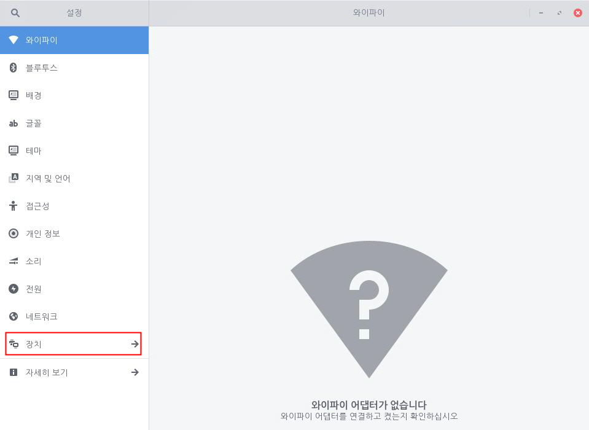
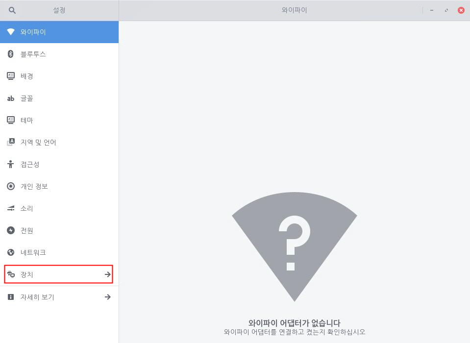
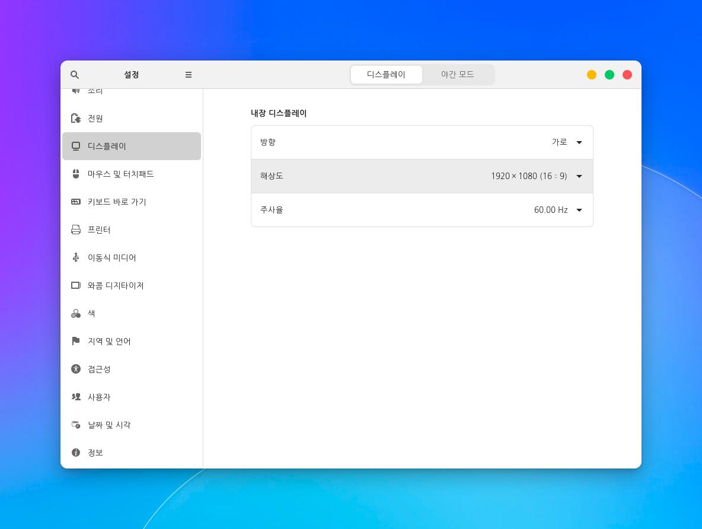
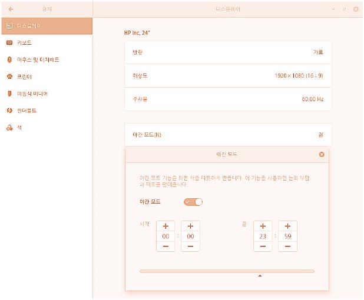
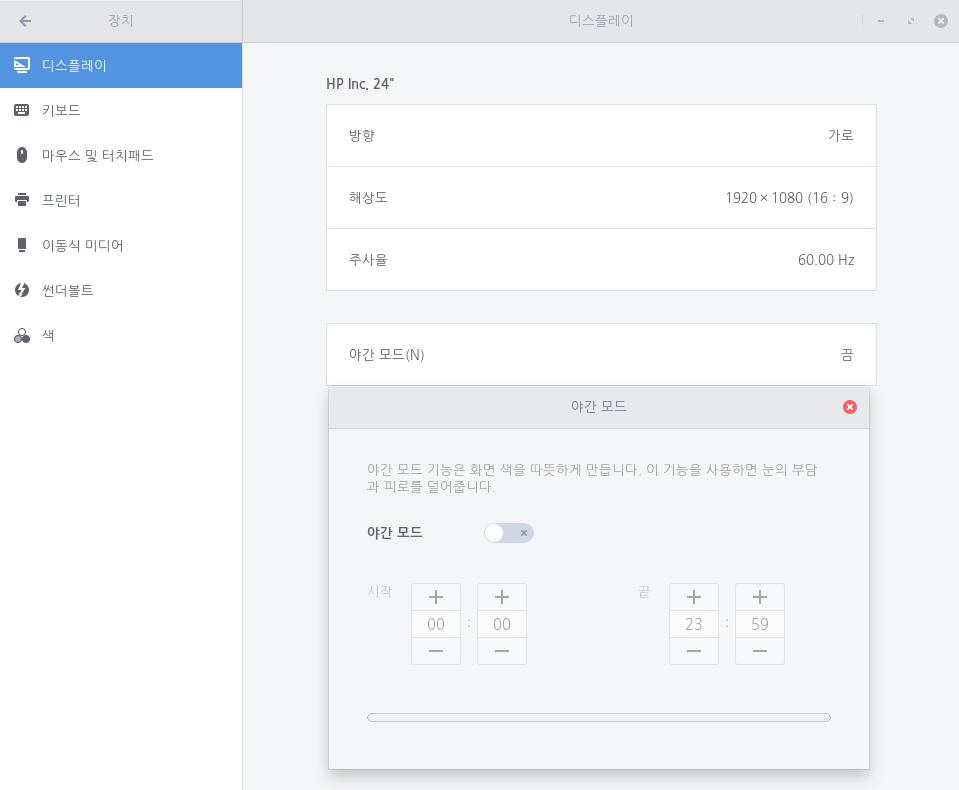

야간 모드를 설정하여 화면의 색 온도를 조절할 수 있습니다. 컴퓨터의 모니터는 블루라이트를 방출하여 사용자의 눈에 피로감을 유발합니다. 야간 모드는 기존 화면 색을 따뜻한 색으로 물들여 눈의 부담과 피로를 덜어줍니다. 한컴구름에서는 기본적으로 야간 모드가 설정되어 있지 않습니다. 다음 단계를 수행하여 야간 모드를 설정합니다.1. 좌측 하단 [시작]아이콘을 클릭하고 검색 창에 "설정"을 입력한 후 [설정] 애플리케이션을 실행합니다.
 2. [설정] 애플리케이션 사이드 바에서 [장치]를 클릭한 후 [디스플레이]를 클릭합니다.
2. [설정] 애플리케이션 사이드 바에서 [장치]를 클릭한 후 [디스플레이]를 클릭합니다.
3. 디스플레이의 [야간 모드] 탭을 클릭합니다. 4-1. 야간 모드 설정을 원하는 경우 화면에서 [야간 모드] 설정 단추를 오른쪽으로 밀어 켠 후 [시작] 시간과 [끝] 시간을 설정합니다.4-2. 야간 모드 설정을 원하지 않는 경우 화면에서 [야간 모드] 설정 단추를 왼쪽으로 밀어 끕니다.